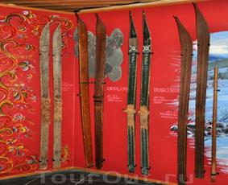

Главная
 В Осло находится очень много музеев. В центре города находится Исторический музей или музей национальных древностей. В нем собраны многие уникальные археологические экспонаты древней и раннесредневековой истории страны. Вблизи этого музея размещается Национальная галерея, созданная в 1837 г. при участии известного живописца и графика Ю.К.К.Даля. Отдельно учрежден музей выдающегося художника, одного из классиков норвежского экспрессионизма Э.Мунка, автора знаменитой картины «Крик».
Также в центре города находится Музей прикладного искусства, где собраны произведения народных умельцев, литье и кованые изделия из металла, выточенные из дерева фигурные сосуды, предметные ткачества, вышивки, вязанье, кружева.
Одно из интереснейших мест в Осло, которое охотнее всего посещают прибывающие в столицу страны, - полуостров Бьогде с его многочисленными музеями. Самый крупный и значительный из них - Норвежский музей народного быта.
Его экспозиция характеризует культуру и быт населения страны. В парковой зоне полуострова расположены участки, похожие по ландшафту на отдельные регионы Норвегии. На этих участках стоят бревенчатые постройки прошлого столетия из Музея под открытым небом. Эти срубные деревянные постройки старых крестьянских усадеб привезены со всех концов страны.
В Осло находится очень много музеев. В центре города находится Исторический музей или музей национальных древностей. В нем собраны многие уникальные археологические экспонаты древней и раннесредневековой истории страны. Вблизи этого музея размещается Национальная галерея, созданная в 1837 г. при участии известного живописца и графика Ю.К.К.Даля. Отдельно учрежден музей выдающегося художника, одного из классиков норвежского экспрессионизма Э.Мунка, автора знаменитой картины «Крик».
Также в центре города находится Музей прикладного искусства, где собраны произведения народных умельцев, литье и кованые изделия из металла, выточенные из дерева фигурные сосуды, предметные ткачества, вышивки, вязанье, кружева.
Одно из интереснейших мест в Осло, которое охотнее всего посещают прибывающие в столицу страны, - полуостров Бьогде с его многочисленными музеями. Самый крупный и значительный из них - Норвежский музей народного быта.
Его экспозиция характеризует культуру и быт населения страны. В парковой зоне полуострова расположены участки, похожие по ландшафту на отдельные регионы Норвегии. На этих участках стоят бревенчатые постройки прошлого столетия из Музея под открытым небом. Эти срубные деревянные постройки старых крестьянских усадеб привезены со всех концов страны.
Рядом с Норвежским музеем народного быта расположены три уникальных музея. Наиболее старый из них – это музей Кораблей Викингов, где собраны удивительные археологические экспонаты - древние изящные суда, на которых предки норвежцев бороздили моря вокруг Европы и пересекали Атлантику до берегов Америки.
В музее «Фрам» хранится корабль Фритьофа Нансена, построенного по чертежам известного полярного исследователя специально для плавания в суровых условиях Арктики. Через 25 лет другой норвежский путешественник Руал Амундсен доплыл на "Фраме" к берегам Антарктиды и затем на лыжах первым из людей достиг Южного полюса.
Но, пожалуй, самый посещаемый сегодня музей - музей "Кон-Тики". Это частный музей , принадлежащий Туру Хейердалу. В нем два основных экспоната - плот "Кон-Тики" и папирусная ладья "Ра", на которых смелый норвежец совершил свои знаменитые плавания.
Есть в Осло и Лыжный музей, где экспонированы типы лыж, от древнейших времен до наших дней. Он расположен в северо-западной части Осло, где находится Хольменколлен с большим трамплином.
Здесь устраиваются крупнейшие ежегодные соревнования лыжников страны по прыжкам с трамплина. Для поездки с лыжами во всех вагонах поездов и в автобусах отведены специальные места для лыж - по числу мест пассажиров. Нет в обиходе норвежцев предмета более распространенного, чем лыжи. "Норвежец родится с лыжами на ногах!" - гласит норвежская поговорка.